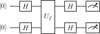

Algorithms / 算法 | 难度：中级 | 预计时间：10 分钟
在无序数据库中查找目标，经典算法需要 \(O(N)\) 次查询，Grover 算法只需要 \(O(\sqrt{N})\) 次。
经典搜索：最坏情况需要遍历所有 \(N\) 个元素
对于 \(N=10^6\)，经典需要 \(10^6\) 次，量子只需要 \(10^3\) 次
二次加速：\(O(\sqrt{N})\) vs \(O(N)\)
对于大规模搜索问题，加速效果显著
是许多量子算法的基础（振幅放大、量子计数）
数据库搜索
密码学（搜索密钥空间）
优化问题（寻找最优解）
SAT 求解
from quonic.algorithms import grover
# Search for |11> in 2-qubit space
result = grover("11", 2, shots=1024)
print(result.counts)预期输出：
{'11': 1008, '00': 6, '01': 5, '10': 5}
Step 1: 初始化
对所有量子比特施加 \(H\) 门，创建均匀叠加态： \[\begin{equation} |\psi_0\rangle = \frac{|00\rangle + |01\rangle + |10\rangle + |11\rangle}{2} \end{equation}\]
Step 2: Oracle 标记
Oracle 翻转目标态 \(|11\rangle\) 的相位： \[\begin{equation} |\psi_1\rangle = \frac{|00\rangle + |01\rangle + |10\rangle - |11\rangle}{2} \end{equation}\]
Step 3: Diffusion 算子
Diffusion 算子关于平均振幅反射： \[\begin{equation} \text{avg} = \frac{1/4 + 1/4 + 1/4 - 1/4}{4} = \frac{1}{8} \end{equation}\]
反射后：\(|11\rangle\) 的振幅被放大。
Step 4: 迭代
重复 Oracle + Diffusion，每次迭代都放大目标态的振幅。
最优迭代次数 \(\approx \pi\sqrt{N}/4\)，测量后目标态概率 \(\approx 100\%\)。
Grover 算法的几何解释：
初始态在均匀叠加态空间中
Oracle 标记目标态，翻转其相位
Diffusion 关于平均振幅反射
每次迭代，目标态的振幅被放大
经过 \(\sim\sqrt{N}\) 次迭代，目标态概率接近 100%
from quonic.algorithms import grover
# grover(target, n_qubits, shots)
# target: target bit string
# n_qubits: number of qubits
# shots: number of measurements
result = grover("11", 2, shots=1024)
# result.counts: measurement statistics
print(result.counts)# Search for |101> in 3-qubit space
result = grover("101", 3, shots=1024)
print(result.counts)# Search for multiple targets
from quonic.algorithms import grover_multi
result = grover_multi(["00", "11"], 2, shots=1024)
print(result.counts)# Grover for optimization
# Find optimal solution in 4 options
result = grover("11", 2, shots=1024)
# |11> corresponds to optimal solution在无序数据库中查找目标，经典需要 \(O(N)\)，量子只需要 \(O(\sqrt{N})\)。
搜索密钥空间，可以加速暴力破解。
寻找最优解，可以加速组合优化问题的求解。
二次加速：\(O(\sqrt{N})\) vs \(O(N)\)。对于 \(N=10^6\)，经典需要 \(10^6\) 次，量子只需要 \(10^3\) 次。
最优迭代次数 \(\approx \pi\sqrt{N}/4\)。对于 \(N=4\)（2 量子比特），只需要 1 次迭代。
Grover 搜索只能找到一个目标。如果需要找所有目标，需要多次运行。
量子比特和叠加态
Hadamard 门和 CNOT 门
量子测量
振幅放大（Grover 的推广）
量子计数（计算目标数量）
量子优化算法
from quonic.algorithms import grover
result = grover("11", 2, shots=1024)
print(result.counts)from quonic.algorithms import grover
result = grover("101", 3, shots=1024)
print(result.counts)